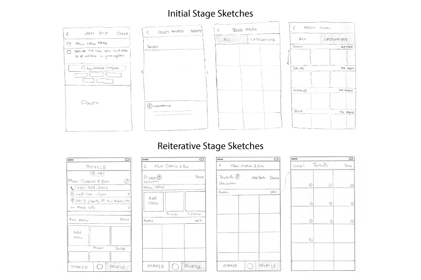

Site Map Analysis
User Flow Design

Journey Maps
Hand-Drawn Sketches

Tree-Testing

Mid-Fidelity Wireframing
DIGITAL EXPERIENCE ENHANCEMENTat BCBSM
As a UX Designer at BCBSM, my work involved the following process:
- Data Analytics
- User & Client Interviews
- Site Map Analysis & User Flow Design
- Journey Maps
- Quick & Versatile Hand-Drawn Sketches
- In-Person & Remote Usability Testing
- Mid-Fidelity Wireframing
- Data-Driven Decisions
- Result & Success Tracking